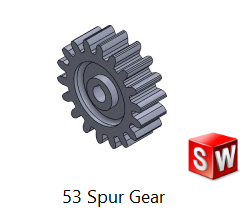

Concept to validated, manufacturable mechanical design.
Mechanical design engineer with hands-on CAD/CAE experience across the full equipment development lifecycle — concept design, gear and mechanism sizing, structural (FEA) validation, GD&T drawing packages, and physical prototyping. Currently completing an MSc in Sustainable Product Creation at the University of Luxembourg, building on 3+ years of industrial engineering experience in lean manufacturing and cross-functional production support.

Spec sheet
CAD & 3D Modelling
SolidWorks · Autodesk Inventor · Fusion 360 · CATIA
Simulation & CAE
ANSYS (structural & non-linear FEA) · Nastran · Topology Optimization · Life Cycle Assessment (LCA)
GD&T & Technical Drawings
Dimensioning, tolerancing, and manufacturing drawing packages
Additive Manufacturing
Design for AM (DFAM) · mesh preparation · build-constraint optimization · topology-driven geometry export
Robotics & Automation
Robot programming · vision-based quality inspection · IIoT integration · sensor & actuator systems
Programming & Data
Python (pandas, matplotlib, automation) · MATLAB & Simulink
Manufacturing & Process Engineering
Lean Manufacturing · Six Sigma · Kaizen · 5S · Value Stream Mapping · Root Cause Analysis · ISO 9001 / 14001 / 45001
Tools & Languages
MS Office (Excel, advanced) · Oracle ERP · English (C1) · French (beginner) · Urdu (native)
Design → validation case studies

Gravity Light — Sustainable Energy Device
2734.7:1 compound planetary gear train converting a descending mass into 227 RPM output; built and tested a working prototype.

20 kN Single-Column Screw Press
Non-linear FEA of a cast-iron base frame; SF 1.5, Von Mises stress below 200 MPa, ~1 mm peak displacement.

Topology Optimization — Bell Crank
DfAM-compliant reconstruction under 20 kN load; 74.7 MPa Von Mises, 0.374 mm displacement, 5.4× buckling margin.